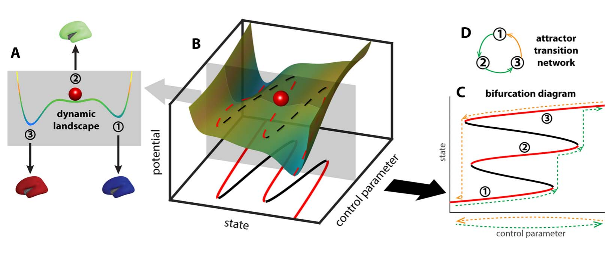
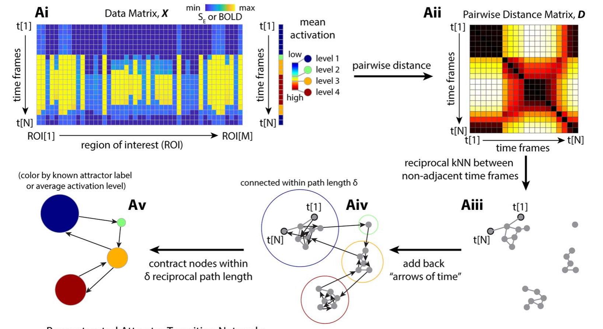

Concepts¶
This page explains the ideas behind Temporal Mapper: what an attractor transition network is, how the two-step construction works, and how to read the parts of the network you see in the Quickstart. For the day-to-day mechanics of running the toolbox, see the Quickstart; this page is the "why."
Temporal Mapper takes a multivariate time series and returns a directed graph — the attractor transition network — whose nodes are the stable states a system settles into and whose edges are the transitions between them. It was designed to bridge two traditions that rarely meet: data-driven analysis (which asks only for the recorded time series) and mechanistic dynamical-systems modeling (which writes down equations of motion). Temporal Mapper stays agnostic about the underlying equations, yet its nodes and edges are meant to correspond to the attractors and phase transitions of the system that produced the data.1
The dynamic landscape¶
A useful mental picture is a ball rolling on a landscape (the surface is the system's state space; the ball is its current state). Valleys are attractors — stable states, because a ball nudged away from the bottom rolls back. The steepness of a valley is the attractor's local stability. A system with several valleys is multistable.
The landscape is not fixed. A slowly changing context — called a control parameter — deforms it. As a valley flattens and disappears, its attractor is destabilized and the ball must roll to a new valley: a phase transition. Because the landscape can take different shapes on the way "up" versus "down" a control parameter, the sequence of attractors visited can be path-dependent — a property called hysteresis, which is why the network is directed.1

The dynamic landscape (A) deforms as a control parameter changes (B), creating and destroying attractors through bifurcations (C); the path-dependent sequence of visited attractors is summarized as a directed attractor transition network (D). Adapted from Zhang, Chowdhury & Saggar (2023), Figure 1 (CC BY 4.0).
From a time series to a network¶
The construction takes two steps.
Step 1 — the spatiotemporal neighborhood graph¶
Treat the time series as a cloud of points, one per time point, in the space of your state variables. Temporal Mapper builds a spatiotemporal k-nearest-neighbor (STKNN) graph on these points:2
- Spatial edges connect points that are close in state space — specifically,
reciprocal k-nearest neighbors (each is among the other's
kclosest), which is more robust to varying local density than plain kNN. - Temporal edges connect each time point to the next, as directed edges. This is the arrow of time, and it is what makes Temporal Mapper a dynamical method rather than an ordinary point-cloud analysis.
Why the arrow of time matters: at a phase transition the system jumps between attractors very fast, so consecutive samples land far apart in state space even though they are directly linked in the dynamics. Spatial proximity alone would miss that link — exactly at the moments of greatest interest. Adding temporal edges restores it, and it means the path length between two nodes carries dynamical, not merely geometric, information: the shortest path from x to y is a path of least "action" through the landscape, and (because the graph is directed) it need not equal the path from y to x.1

The construction pipeline: the data matrix (Ai) yields a pairwise distance matrix (Aii); reciprocal k-nearest neighbors between non-adjacent time frames form the spatial graph (Aiii); the arrows of time are added back as directed edges (Aiv); and nodes within a path length δ are contracted into the final transition network (Av). Adapted from Zhang, Chowdhury & Saggar (2023), Figure 3A (CC BY 4.0).
Step 2 — contraction into the transition network¶
The STKNN graph has one node per time point, which is far too fine. In the second step,
time points that sit within a distance d of each other are contracted into a single
node. Here d is measured as the shortest path length in the STKNN graph — roughly,
the minimal number of time steps needed to get from one state to the other — so a larger
d merges more and yields a coarser, more compressed network.2 The result is the
attractor transition network.
Because d is a scale knob, Temporal Mapper is naturally multiscale: the same data
can be viewed as a family of networks at increasing d, with small recurrent excursions
progressively absorbed into single nodes.1
Reading the network¶
Once you have a network, four features carry most of the meaning:
| Dynamical-systems idea | In the network | What it tells you |
|---|---|---|
| Attractor (stable state) | Node | A state the system keeps returning to |
| Local stability | Node size | Total dwell time — how long the system stays there; bigger = a stronger, "deeper" attractor |
| Transition | Edge (directed) | A sudden switch from one state to a qualitatively different one; the arrow is the direction of time |
| Series of transitions back to a state | Loop / cycle | The process by which a state recurs |
| Global stability | Loop length | How many transitions it takes to leave a state and return; longer loops = less global stability |
(The node-size and loop-length mapping follows Luo & Zhang, 2026, Table 1.2)
A helpful distinction is local vs. global dynamics. Node size is local: it is about one attractor on a short timescale. Loop length is global: it concerns how the whole repertoire of attractors is connected and how hard it is to move around it, which shows up over longer timescales.2
Source-like and sink-like nodes¶
Because edges are directed, a node can be more of a source (easy to leave, hard to get back to) or a sink (easy to reach, hard to leave). Averaging the network's geodesic distances by row versus column gives a source distance and a sink distance for each moment; their difference flags source-like vs. sink-like states, which in the fMRI study marked the entry and exit of cognitively demanding task blocks.1
The recurrence plot¶
The recurrence plot that appears alongside the network is an N×N image whose (i, j) entry is the distance between the states at times i and j. Crucially, for Temporal Mapper this distance is the shortest path length in the network (a dynamics-aware, generally asymmetric quantity), not the Euclidean distance between raw states — which is why it reveals structure that a classical recurrence plot does not.1
When does it work?¶
Temporal Mapper assumes a separation of timescales: transitions between states (the "escape") must be fast compared with the slow drift within a state (the "dwell"). When data show this dwell–escape character, stable states appear as nodes and switches appear as edges. If states blur into each other without distinct dwelling, the network is less meaningful.2
Relationship to other methods¶
- Hidden Markov models (HMMs): an HMM fixes the number of states a priori and assumes the Markov property; Temporal Mapper's analog — the number of attractors visited — is data-driven, and it makes no Markov assumption, which suits non-stationary systems.1
- Mapper / NeuMapper and other TDA: these treat a time series as a static point cloud and discard the sequence; Temporal Mapper's defining move is to fold in the arrow of time.1
- Comparing whole networks: because two networks can have different numbers of nodes, comparing them is a graph-matching problem. Temporal Mapper uses the Gromov–Wasserstein distance from optimal transport, which compares full structure without a pre-specified node correspondence.1
Parameters at a glance¶
The Quickstart shows these in code; briefly:
k— spatial neighborhood size in the STKNN graph (largerk→ denser graph).d— contraction distance in Step 2 (largerd→ coarser network).texclude(timeExcludeRange) — how many neighboring time points count as temporal (and are therefore barred from being spatial) neighbors.maxNeighborDist/maxNeighborDistPrct— absolute and percentile caps on how far apart two points may be and still be called neighbors (the stricter one wins).
A practical rule from both studies: choose k and d in a range where the network is
stable to small parameter changes; increasing either one simplifies the graph. For a
sense of scale across domains: the fMRI study used k = 5, d = 2; the interpersonal
psychotherapy study k = 7, d = 3; and the ferret-behavior study k = 10,
d = 3.123
References¶
-
Zhang, M., Chowdhury, S., & Saggar, M. (2023). Temporal Mapper: transition networks in simulated and real neural dynamics. Network Neuroscience, 7(2), 431–460. https://doi.org/10.1162/netn_a_00301 (CC BY 4.0) ↩↩↩↩↩↩↩↩↩↩
-
Luo, X., & Zhang, M. (2026). A topological data analysis method for revealing dynamic changes in psychotherapy microprocesses. Frontiers in Psychology, 16, 1711782. https://doi.org/10.3389/fpsyg.2025.1711782 (CC BY) ↩↩↩↩↩↩
-
Reiling, J., Padilla-Coreano, N., Patel, D., Frohlich, F., & Zhang, M. (2026). Topological data analysis captures complex behavioral dynamics during naturalistic social interaction between domestic ferrets. bioRxiv 2026.07.01.735818 (preprint). https://doi.org/10.64898/2026.07.01.735818 (CC BY 4.0) ↩